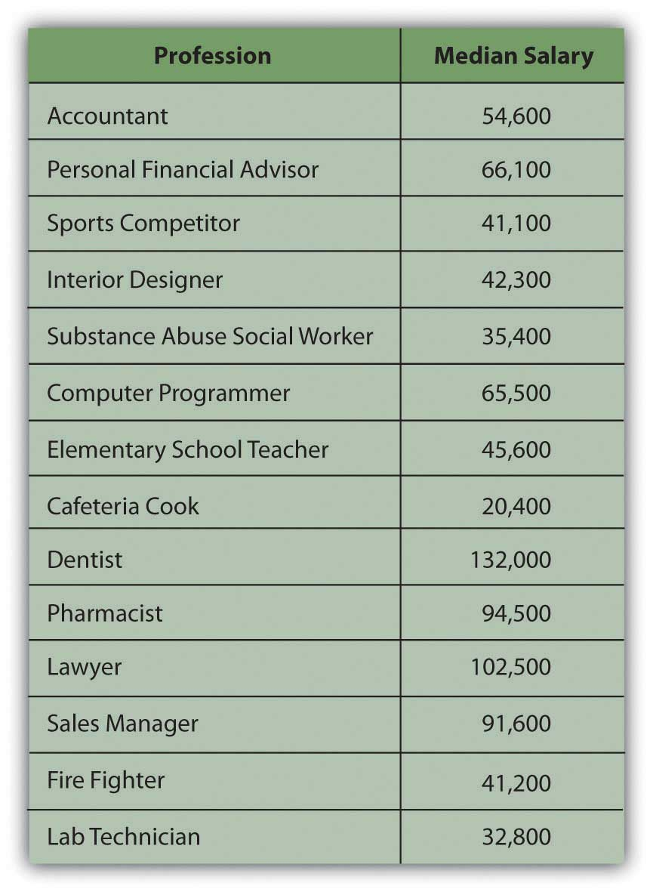
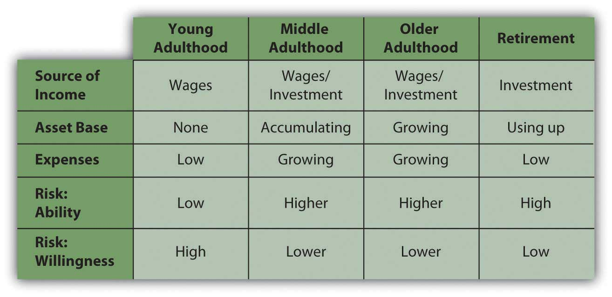
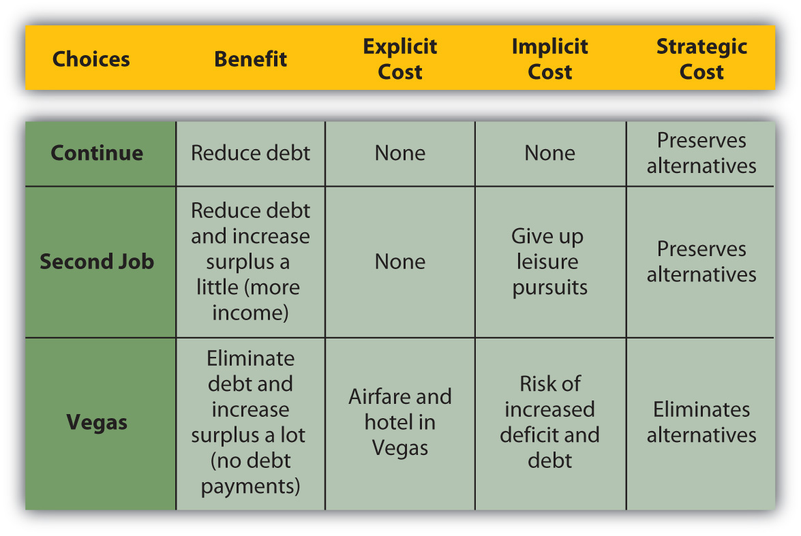

Bryon and Tomika are just one semester shy of graduating from a state college. Bryon is getting a degree in protective services and is thinking of going for certification as a fire protection engineer, which would cost an additional $4,500. With his protective services degree many other fields will be open to him as well—from first responder to game warden or correctional officer. Bryon will have to specialize immediately and wants a job in his state that comes with some occupational safety and a lot of job security.
Tomika is getting a Bachelor of Science degree in medical technology and hopes to parlay that into a job as a lab technician. She has interviews lined up at a nearby regional hospital and a local pharmaceutical firm. She hopes she gets the hospital job because it pays a little better and offers additional training on site. Both Bryon and Tomika will need additional training to have the jobs they want, and they are already in debt for their educations.
Tomika qualified for a Stafford loan, and the federal government subsidizes her loan by paying the interest on it until six months after she graduates. She will owe about $40,000 of principal plus interest at a fixed annual rate of 6.8 percent. Tomika plans to start working immediately on graduation and to take classes on the job or at night for as long as it takes to get the extra certification she needs. Unsubsidized, the extra training would cost about $3,500. She presently earns about $5,000 a year working weekends as a home health aide and could easily double that after she graduates. Tomika also qualified for a Pell grant of around $5,000 each year she was a full-time student, which has paid for her rooms in an off-campus student co-op housing unit. Bryon also lives there, and that’s how they met.
Bryon would like to get to a point in his life where he can propose marriage to Tomika and looks forward to being a family man one day. He was awarded a service scholarship from his hometown and received windfall money from his grandmother’s estate after she died in his sophomore year. He also borrowed $30,000 for five years at only 2.25 percent interest from his local bank through a family circle savings plan. He has been attending classes part-time year-round so he can work to earn money for college and living expenses. He earns about $19,000 a year working for catering services. Bryon feels very strongly about repaying his relatives who have helped finance his education and also is willing to help Tomika pay off her Stafford loan after they marry.
Tomika has $3,000 in U.S. Treasury Series EE savings bonds, which mature in two years, and has managed to put aside $600 in a savings account earmarked for clothes and gifts. Bryon has sunk all his savings into tuition and books, and his only other asset is his trusty old pickup truck, which has no liens and a trade-in value of $3,900. For both Tomika and Bryon, having reliable transportation to their jobs is a concern. Tomika hopes to continue using public transportation to get to a new job after graduation. Both Bryon and Tomika are smart enough about money to have avoided getting into credit card debt. Each keeps only one major credit card and a debit card and with rare exceptions pays statements in full each month.
Bryon and Tomika will have to find new housing after they graduate. They could look for another cooperative housing opportunity or rent apartments, or they could get married now instead of waiting. Bryon also has a rent-free option of moving in temporarily with his brother. Tomika feels very strongly about saving money to buy a home and wants to wait until her career is well established before having a child. Tomika is concerned about getting good job benefits, especially medical insurance and family leave. Although still young, Bryon is concerned about being able to retire, the sooner the better, but he has no idea how that would be possible. He thinks he would enjoy running his own catering firm as a retirement business some day.
Tomika’s starting salary as a lab technician will be about $30,000, and as a fire protection engineer, Bryon would have a starting salary of about $38,000. Both have the potential to double their salaries after fifteen years on the job, but they are worried about the economy. Their graduations are coinciding with a downturn. Aside from Tomika’s savings bonds, she and Bryon are not in the investment market, although as soon as he can Bryon wants to invest in a diversified portfolio of money market funds that include corporate stocks and municipal bonds. Nevertheless, the state of the economy affects their situation. Money is tight and loans are hard to get, jobs are scarce and highly competitive, purchasing power and interest rates are rising, and pension plans and retirement funds are at risk of losing value. It’s uncertain how long it will be before the trend reverses, so for the short term, they need to play it safe. What if they can’t land the jobs they’re preparing for?
Tomika and Bryon certainly have a lot of decisions to make, and some of those decisions have high-stakes consequences for their lives. In making those decisions, they will have to answer some questions, such as the following:
You will make financial decisions all your life. Sometimes you can see those decisions coming and plan deliberately; sometimes, well, stuff happens, and you are faced with a more sudden decision. Personal financial planning is about making deliberate decisions that allow you to get closer to your goals or sudden decisions that allow you to stay on track, even when things take an unexpected turn.
The idea of personal financial planning is really no different from the idea of planning most anything: you figure out where you’d like to be, where you are, and how to go from here to there. The process is complicated by the number of factors to consider, by their complex relationships to each other, and by the profound nature of these decisions, because how you finance your life will, to a large extent, determine the life that you live. The process is also, often enormously, complicated by risk: you are often making decisions with plenty of information, but little certainty or even predictability.
Personal financial planning is a lifelong process. Your time horizon is as long as can be—until the very end of your life—and during that time your circumstances will change in predictable and unpredictable ways. A financial plan has to be re-evaluated, adjusted, and re-adjusted. It has to be flexible enough to be responsive to unanticipated needs and desires, robust enough to advance toward goals, and all the while be able to protect from unimagined risks.
One of the most critical resources in the planning process is information. We live in a world awash in information—and no shortage of advice—but to use that information well you have to understand what it is telling you, why it matters, where it comes from, and how to use it in the planning process. You need to be able to put that information in context, before you can use it wisely. That context includes factors in your individual situation that affect your financial thinking, and factors in the wider economy that affect your financial decision making.
The circumstances or characteristics of your life influence your financial concerns and plans. What you want and need—and how and to what extent you want to protect the satisfaction of your wants and needs—all depend on how you live and how you’d like to live in the future. While everyone is different, there are common circumstances of life that affect personal financial concerns and thus affect everyone’s financial planning. Factors that affect personal financial concerns are family structure, health, career choices, and age.
Marital status and dependents, such as children, parents, or siblings, determine whether you are planning only for yourself or for others as well. If you have a spouse or dependents, you have a financial responsibility to someone else, and that includes a responsibility to include them in your financial thinking. You may expect the dependence of a family member to end at some point, as with children or elderly parents, or you may have lifelong responsibilities to and for another person.
Partners and dependents affect your financial planning as you seek to provide for them, such as paying for children’s education. Parents typically want to protect or improve the quality of life for their children and may choose to limit their own fulfillment to achieve that end.
Providing for others increases income needs. Being responsible for others also affects your attitudes toward and tolerance of risk. Typically, both the willingness and ability to assume risk diminishes with dependents, and a desire for more financial protection grows. People often seek protection for their income or assets even past their own lifetimes to ensure the continued well-being of partners and dependents. An example is a life insurance policy naming a spouse or dependents as beneficiaries.
Your health is another defining circumstance that will affect your expected income needs and risk tolerance and thus your personal financial planning. Personal financial planning should include some protection against the risk of chronic illness, accident, or long-term disability and some provision for short-term events, such as pregnancy and birth. If your health limits your earnings or ability to work or adds significantly to your expenditures, your income needs may increase. The need to protect yourself against further limitations or increased costs may also increase. At the same time your tolerance for risk may decrease, further affecting your financial decisions.
Your career choices affect your financial planning, especially through educational requirements, income potential, and characteristics of the occupation or profession you choose. Careers have different hours, pay, benefits, risk factors, and patterns of advancement over time. Thus, your financial planning will reflect the realities of being a postal worker, professional athlete, commissioned sales representative, corporate lawyer, freelance photographer, librarian, building contractor, tax preparer, professor, Web site designer, and so on. For example, the careers of most athletes end before middle age, have higher risk of injury, and command steady, higher-than-average incomes, while the careers of most sales representatives last longer with greater risk of unpredictable income fluctuations. Figure 1.1 "Median Salary Comparisons by Profession" compares the median salaries of certain careers.
Figure 1.1 Median Salary Comparisons by ProfessionBased on data from http://www.careeroverview.com/salary-benefits.html (accessed November 21, 2009).
Most people begin their independent financial lives by selling their labor to create an income by working. Over time they may choose to change careers, develop additional sources of concurrent income, move between employment and self-employment, or become unemployed or reemployed. Along with career choices, all these changes affect personal financial management and planning.
Needs, desires, values, and priorities all change over a lifetime, and financial concerns change accordingly. Ideally, personal finance is a process of management and planning that anticipates or keeps abreast with changes. Although everyone is different, some financial concerns are common to or typical of the different stages of adult life. Analysis of life stagesPeriods of a person’s life based on age and personal circumstances that reflect different needs, goals, and financial capabilities. is part of financial planning.
At the beginning of your adult life, you are more likely to have no dependents, little if any accumulated wealth, and few assetsResources that can be used to create future economic benefit, such as increasing income, decreasing expenses, or storing wealth as an investment.. (Assets are resources that can be used to create income, decrease expenses, or store wealth as an investment.) As a young adult you also are likely to have comparatively small income needs, especially if you are providing only for yourself. Your employment income is probably your primary or sole source of income. Having no one and almost nothing to protect, your willingness to assume risk is usually high. At this point in your life, you are focused on developing your career and increasing your earned income. Any investments you may have are geared toward growth.
As your career progresses, income increases but so does spending. Lifestyle expectations increase. If you now have a spouse and dependents and elderly parents to look after, you have additional needs to manage. In middle adulthood you may also be acquiring more assets, such as a house, a retirement account, or an inheritance.
As income, spending, and asset base grow, ability to assume risk grows, but willingness to do so typically decreases. Now you have things that need protection: dependents and assets. As you age, you realize that you require more protection. You may want to stop working one day, or you may suffer a decline in health. As an older adult you may want to create alternative sources of income, perhaps a retirement fund, as insurance against a loss of employment or income. Figure 1.3 "Financial Decisions Related to Life Stages" suggests the effects of life stages on financial decision making.
Figure 1.3 Financial Decisions Related to Life Stages
Early and middle adulthoods are periods of building up: building a family, building a career, increasing earned income, and accumulating assets. Spending needs increase, but so do investments and alternative sources of income.
Later adulthood is a period of spending down. There is less reliance on earned income and more on the accumulated wealth of assets and investments. You are likely to be without dependents, as your children have grown up or your parents passed on, and so without the responsibility of providing for them, your expenses are lower. You are likely to have more leisure time, especially after retirement.
Without dependents, spending needs decrease. On the other hand, you may feel free to finally indulge in those things that you’ve “always wanted.” There are no longer dependents to protect, but assets demand even more protection as, without employment, they are your only source of income. Typically, your ability to assume risk is high because of your accumulated assets, but your willingness to assume risk is low, as you are now dependent on those assets for income. As a result, risk tolerance decreases: you are less concerned with increasing wealth than you are with protecting it.
Effective financial planning depends largely on an awareness of how your current and future stages in life may influence your financial decisions.
Financial planning has to take into account conditions in the wider economy and in the markets that make up the economy. The labor marketWhere labor is traded through hiring or employment and price is determined by the interaction of employers and employees., for example, is where labor is traded through hiring or employment. Workers compete for jobs and employers compete for workers. In the capital marketA market where long-term liquidity is traded., capital (cash or assets) is traded, most commonly in the form of stocks and bonds (along with other ways to package capital). In the credit marketA part of the capital market where capital is lent and borrowed through the trading of debt securities such as bonds., a part of the capital market, capital is loaned and borrowed rather than bought and sold. These and other markets exist in a dynamic economic environment, and those environmental realities are part of sound financial planning.
In the long term, history has proven that an economy can grow over time, that investments can earn returns, and that the value of currency can remain relatively stable. In the short term, however, that is not continuously true. Contrary or unsettled periods can upset financial plans, especially if they last long enough or happen at just the wrong time in your life. Understanding large-scale economic patterns and factors that indicate the health of an economy can help you make better financial decisions. These systemic factors include, for example, business cycles and employment rates.
An economy tends to be productive enough to provide for the wants of its members. Normally, economic output increases as population increases or as people’s expectations grow. An economy’s output or productivity is measured by its gross domestic productThe total value of all final goods and services produced in a year in a nation’s economy. It is used as a fundamental measure of an economy’s growth based on its ability to use resources productively and provide for its members. or GDP, the value of what is produced in a period. When the GDP is increasing, the economy is in an expansion, and when it is decreasing, the economy is in a contraction. An economy that contracts for half a year is said to be in recessionA period of economic contraction lasting at least six consecutive months or two consecutive quarters.; a prolonged recession is a depressionA prolonged and severe recession.. The GDP is a closely watched barometer of the economy (see Figure 1.4 "GDP Percent Change (Based on Current Dollars)").
Figure 1.4 GDP Percent Change (Based on Current Dollars)Based on data from the Bureau of Economic Analysis, U.S. Department of Commerce, http://www.bea.gov/national/ (accessed November 21, 2009).

Over time, the economy tends to be cyclical, usually expanding but sometimes contracting. This is called the business cycleRecurring periods of economy-wide expansion, when the economy is growing, and contraction, when the economy is shrinking. Cycles are often measured by the increase or decrease in the GDP.. Periods of contraction are generally seen as market corrections, or the market regaining its equilibrium, after periods of growth. Growth is never perfectly smooth, so sometimes certain markets become unbalanced and need to correct themselves. Over time, the periods of contraction seem to have become less frequent, as you can see in Figure 1.4 "GDP Percent Change (Based on Current Dollars)". The business cycles still occur nevertheless.
There are many metaphors to describe the cyclical nature of market economies: “peaks and troughs,” “boom and bust,” “growth and contraction,” “expansion and correction,” and so on. While each cycle is born in a unique combination of circumstances, cycles occur because things change and upset economic equilibrium. That is, events change the balance between supply and demand in the economy overall. Sometimes demand grows too fast and supply can’t keep up, and sometimes supply grows too fast for demand. There are many reasons that this could happen, but whatever the reasons, buyers and sellers react to this imbalance, which then creates a change.
An economy produces not just goods and services to satisfy its members but also jobs, because most people participate in the market economy by trading their labor, and most rely on wages as their primary source of income. The economy therefore must provide opportunity to earn wages so more people can participate in the economy through the market. Otherwise, more people must be provided for in some other way, such as a private or public subsidy (charity or welfare).
The unemployment rateA measure of the percentage of people in the labor force who are unemployed, that is, those who would like to be working but cannot find a suitable job. is a measure of an economy’s shortcomings, because it shows the proportion of people who want to work but don’t because the economy cannot provide them jobs. There is always some so-called natural rate of unemployment as people move in and out of the workforce as the circumstances of their lives change—for example, as they retrain for a new career or take time out for family. But natural unemployment should be consistently low and not affect the productivity of the economy.
Unemployment also shows that the economy is not efficient, because it is not able to put all its productive human resources to work.
The employment rateA measure of the rate of labor force participation, or the percentage of the labor force that is employed, that is, people who want to work and are working., or the participation rate of the labor force, shows how successful an economy is at creating opportunities to sell labor and efficiently using its human resources. A healthy market economy uses its labor productively, is productive, and provides employment opportunities as well as consumer satisfaction through its markets. Figure 1.6 "Cyclical Economic Effects" shows the relationship between GDP and unemployment and each stage of the business cycle.
Figure 1.6 Cyclical Economic Effects

At either end of this scale of growth, the economy is in an unsustainable position: either growing too fast, with too much demand for labor, or shrinking, with too little demand for labor.
If there is too much demand for labor—more jobs than workers to fill them—then wages will rise, pushing up the cost of everything and causing prices to rise. Prices usually rise faster than wages, for many reasons, which would discourage consumption that would eventually discourage production and cause the economy to slow down from its “boom” condition into a more manageable rate of growth.
If there is too little demand for labor—more workers than jobs—then wages will fall or, more typically, there will be people without jobs, or unemployment. If wages become low enough, employers theoretically will be encouraged to hire more labor, which would bring employment levels back up. However, it doesn’t always work that way, because people have job mobility—they are willing and able to move between economies to seek employment.
If unemployment is high and prolonged, then too many people are without wages for too long, and they are not able to participate in the economy because they have nothing to trade. In that case, the market economy is just not working for too many people, and they will eventually demand a change (which is how most revolutions have started).
Other economic indicators give us clues as to how “successful” our economy is, how well it is growing, or how well positioned it is for future growth. These indicators include statistics, such as the number of houses being built or existing home sales, orders for durable goods (e.g., appliances and automobiles), consumer confidence, producer prices, and so on. However, GDP growth and unemployment are the two most closely watched indicators, because they get at the heart of what our economy is supposed to accomplish: to provide diverse opportunities for the most people to participate in the economy, to create jobs, and to satisfy the consumption needs of the most people by enabling them to get what they want.
An expanding and healthy economy will offer more choices to participants: more choices for trading labor and for trading capital. It offers more opportunities to earn a return or an income and therefore also offers more diversification and less risk.
Naturally, everyone would rather operate in a healthier economy at all times, but this is not always possible. Financial planning must include planning for the risk that economic factors will affect financial realities. A recession may increase unemployment, lowering the return on labor—wages—or making it harder to anticipate an increase in income. Wage income could be lost altogether. Such temporary involuntary loss of wage income probably will happen to you during your lifetime, as you inevitably will endure economic cycles.
A hedge against lost wages is investment to create other forms of income. In a period of economic contraction, however, the usefulness of capital, and thus its value, may decline as well. Some businesses and industries are considered immune to economic cycles (e.g., public education and health care), but overall, investment returns may suffer. Thus, during your lifetime business cycles will likely affect your participation in the capital markets as well.
Stable currency value is another important indicator of a healthy economy and a critical element in financial planning. Like anything else, the value of a currency is based on its usefulness. We use currency as a medium of exchange, so the value of a currency is based on how it can be used in trade, which in turn is based on what is produced in the economy. If an economy produces little that anyone wants, then its currency has little value relative to other currencies, because there is little use for it in trade. So a currency’s value is an indicator of how productive an economy is.
A currency’s usefulness is based on what it can buy, or its purchasing powerA currency’s usefulness and thus its value as measured by how much it can buy, that is, the quantity of goods and services that can be purchased with one unit of currency.. The more a currency can buy, the more useful and valuable it is. When prices rise or when things cost more, purchasing power decreases; the currency buys less and its value decreases.
When the value of a currency decreases, an economy has inflationPeriod characterized by rising prices, declining purchasing power, and lower currency values (one unit of currency is worth less because it buys a smaller quantity of goods and services).. Its currency has less value because it is less useful; that is, less can be bought with it. Prices are rising. It takes more units of currency to buy the same amount of goods. When the value of a currency increases, on the other hand, an economy has deflationPeriod characterized by falling prices, increasing purchasing power, and higher currency values (one unit of currency is worth more because it buys a greater quantity of goods and services).. Prices are falling; the currency is worth more and buys more.
For example, say you can buy five video games for $20. Each game is worth $4, or each dollar buys ¼ of a game. Then we have inflation, and prices—including the price of video games—rise. A year later you want to buy games, but now your $20 only buys two games. Each one costs $10, or each dollar only buys one-tenth of a game. Rising prices have eroded the purchasing power of your dollars.
If there is deflation, prices fall, so maybe a year later you could buy ten video games with your same $20. Now each game costs only $2, and each dollar buys half a game. The same amount of currency buys more games: its purchasing power has increased, as has its usefulness and its value (Figure 1.7 "Dynamics of Currency Value").
Figure 1.7 Dynamics of Currency Value

Inflation is most commonly measured by the consumer price indexA measure of inflation or deflation based on a national average of prices for a “basket” of common goods and services purchased by the average consumer. (CPI), an index created and tracked by the federal government. It measures the average nationwide prices of a “basket” of goods and services purchased by the average consumer. It is an accepted way of tracking rising or falling price levels, indicative of inflation or deflation. Figure 1.9 "Inflation, 1979–2008" shows the percent change in the consumer price index as a measure of inflation during the period from 1979 to 2008.
Figure 1.9 Inflation, 1979–2008Based on data from the Bureau of Labor Statistics, U.S. Department of Labor, http://www.bls.gov (accessed November 21, 2009).

Currency instabilities can also affect investment values, because the dollars that investments return don’t have the same value as the dollars that the investment was expected to return. Say you lend $100 to your sister, who is supposed to pay you back one year from now. There is inflation, so over the next year, the value of the dollar decreases (it buys less as prices rise). Your sister does indeed pay you back on time, but now the $100 that she gives back to you is worth less (because it buys less) than the $100 you gave her. Your investment, although nominally returned, has lost value: you have your $100 back, but you can’t do as much with it; it is less useful.
If the value of currency—the units in which wealth is measured and stored—is unstable, then investment returns are harder to predict. In those circumstances, investment involves more risk. Both inflation and deflation are currency instabilities that are troublesome for an economy and also for the financial planning process. An unstable currency affects the value or purchasing power of income. Price changes affect consumption decisions, and changes in currency value affect investing decisions.
It is human nature to assume that things will stay the same, but financial planning must include the assumption that over a lifetime you will encounter and endure economic cycles. You should try to anticipate the risks of an economic downturn and the possible loss of wage income and/or investment income. At the same time, you should not assume or rely on the windfalls of an economic expansion.
In addition to GDP, measures of the health of an economy include
Thus, personal financial planning should take into account
Brainstorm with others taking this course on effective personal financial strategies for
A financial planning processA recursive process of defining goals, assessing situations, identifying and evaluating choices, making choices and assessing the results, redefining goals, and so on. involves figuring out where you’d like to be, where you are, and how to go from here to there. More formally, a financial planning process means the following:
Personal circumstances change, and the economy changes, so your plans must be flexible enough to adapt to those changes, yet be steady enough to eventually achieve long-term goals. You must be constantly alert to those changes but “have a strong foundation when the winds of changes shift.”“Forever Young,” music and lyrics by Bob Dylan.
Figuring out where you want to go is a process of defining goals. You have shorter-term (1–2 years), intermediate (2–10 years), and longer-term goals that are quite realistic and goals that are more wishful. Setting goals is a skill that usually improves with experience. According to a popular model, to be truly useful goals must be Specific, Measurable, Attainable, Realistic, and Timely (S.M.A.R.T.). Goals change over time, and certainly over a lifetime. Whatever your goals, however, life is complicated and risky, and having a plan and a method to reach your goals increases the odds of doing so.
For example, after graduating from college, Alice has an immediate focus on earning income to provide for living expenses and debt (student loan) obligations. Within the next decade, she foresees having a family; if so, she will want to purchase a house and perhaps start saving for her children’s educations. Her income will have to provide for her increased expenses and also generate a surplus that can be saved to accumulate these assets.
In the long term, she will want to be able to retire and derive all her income from her accumulated assets, and perhaps travel around the world in a sailboat. She will have to have accumulated enough assets to provide for her retirement income and for the travel. Figure 1.10 "Timing, Goals, and Income" shows the relationship between timing, goals, and sources of income.
Figure 1.10 Timing, Goals, and Income

Alice’s income will be used to meet her goals, so it’s important for her to understand where her income will be coming from and how it will help in achieving her goals. She needs to assess her current situation.
Figuring out where you are or assessing the current situation involves understanding what your present situation is and the choices that it creates. There may be many choices, but you want to identify those that will be most useful in reaching your goals.
Assessing the current situation is a matter of organizing personal financial information into summaries that can clearly show different and important aspects of financial life—your assets, debts, incomes, and expenses. These numbers are expressed in financial statements—in an income statement, balance sheet, and cash flow statement (topics discussed in Chapter 3 "Financial Statements"). Businesses also use these three types of statements in their financial planning.
For now, we can assess Alice’s simple situation by identifying her assets and debts and by listing her annual incomes and expenses. That will show if she can expect a budget surplus or deficit, but more important, it will show how possible her goals are and whether she is making progress toward them. Even a ballpark assessment of the current situation can be illuminating.
Alice’s assets may be a car worth about $5,000 and a savings account with a balance of $250. Debts include a student loan with a balance of $53,000 and a car loan with a balance of $2,700; these are shown in Figure 1.11 "Alice’s Financial Situation".
Figure 1.11 Alice’s Financial Situation

Her annual disposable income (after-tax income or take-home pay) may be $35,720, and annual expenses are expected to be $10,800 for rent and $14,400 for living expenses—food, gas, entertainment, clothing, and so on. Her annual loan payments are $2,400 for the car loan and $7,720 for the student loan, as shown in Figure 1.12 "Alice’s Income and Expenses".
Figure 1.12 Alice’s Income and Expenses

Alice will have an annual budget surplus of just $400 (income = $35,720 − $35,320 [total expenses + loan repayments]). She will be achieving her short-term goal of reducing debt, but with a small annual budget surplus, it will be difficult for her to begin to achieve her goal of accumulating assets.
To reach that intermediate goal, she will have to increase income or decrease expenses to create more of an annual surplus. When her car loan is paid off next year, she hopes to buy another car, but she will have at most only $650 (250 + 400) in savings for a down payment for the car, and that assumes she can save all her surplus. When her student loans are paid off in about five years, she will no longer have student loan payments, and that will increase her surplus significantly (by $7,720 per year) and allow her to put that money toward asset accumulation.
Alice’s long-term goals also depend on her ability to accumulate productive assets, as she wants to be able to quit working and live on the income from her assets in retirement. Alice is making progress toward meeting her short-term goals of reducing debt, which she must do before being able to work toward her intermediate and long-term goals. Until she reduces her debt, which would reduce her expenses and increase her income, she will not make progress toward her intermediate and long-term goals.
Assessing her current situation allows Alice to see that she has to delay accumulating assets until she can reduce expenses by reducing debt (and thus her student loan payments). She is now reducing debt, and as she continues to do so, her financial situation will begin to look different, and new choices will be available to her.
Alice learned about her current situation from two simple lists: one of her assets and debts and the other of her income and expenses. Even in this simple example it is clear that the process of articulating the current situation can put information into a very useful context. It can reveal the critical paths to achieving goals.
Figuring out how to go from here to there is a process of identifying immediate choices and longer-term strategies or series of choices. To do this, you have to be realistic and yet imaginative about your current situation to see the choices it presents and the future choices that current choices may create. The characteristics of your living situation—family structure, age, career choice, health—and the larger context of the economic environment will affect or define the relative value of your choices.
After you have identified alternatives, you evaluate each one. The obvious things to look for and assess are its costs and benefits, but you also want to think about its risks, where it will leave you, and how well positioned it will leave you to make the next decision. You want to have as many choices as you can at any point in the process, and you want your choices to be well diversified. That way, you can choose with an understanding of how this choice will affect the next choices and the next. The further along in the process you can think, the better you can plan.
In her current situation, Alice is reducing debt, so one choice would be to continue. She could begin to accumulate assets sooner, and thus perhaps more of them, if she could reduce expenses to create more of a budget surplus. Alice looks over her expenses and decides she really can’t cut them back much. She decides that the alternative of reducing expenses is not feasible. She could increase income, however. She has two choices: work a second job or go to Las Vegas to play poker.
Alice could work a second, part-time job that would increase her after-tax income but leave her more tired and with less time for other interests. The economy is in a bit of a slump too—unemployment is up a bit—so her second job probably wouldn’t pay much. She could go to Vegas and win big, with the cost of the trip as her only expense. To evaluate her alternatives, Alice needs to calculate the benefits and costs of each (Figure 1.13 "Alice’s Choices: Benefits and Costs").
Figure 1.13 Alice’s Choices: Benefits and Costs

Laying out Alice’s choices in this way shows their consequences more clearly. The alternative with the biggest benefit is the trip to Vegas, but that also has the biggest cost because it has the biggest risk: if she loses, she could have even more debt. That would put her further from her goal of beginning to accumulate assets, which would have to be postponed until she could eliminate that new debt as well as her existing debt.
Thus, she would have to increase her income and decrease her expenses. Simply continuing as she does now would no longer be an option because the new debt increases her expenses and creates a budget deficit. Her only remaining alternative to increase income would be to take the second job that she had initially rejected because of its implicit cost. She would probably have to reduce expenses as well, an idea she initially rejected as not even being a reasonable choice. Thus, the risk of the Vegas option is that it could force her to “choose” alternatives that she had initially rejected as too costly.
Figure 1.15 Considering Risk in Alice’s Choice

The Vegas option becomes least desirable when its risk is included in the calculations of its costs, especially as they compare with its benefits.
Its obvious risk is that Alice will lose wealth, but its even costlier risk is that it will limit her future choices. Without including risk as a cost, the Vegas option looks attractive, which is, of course, why Vegas exists. But when risk is included, and when the decision involves thinking strategically not only about immediate consequences but also about the choices it will preserve or eliminate, that option can be seen in a very different light (Figure 1.16 "Alice’s Choices: Benefits and More Costs").
Figure 1.16 Alice’s Choices: Benefits and More Costs
You may sometimes choose an alternative with less apparent benefit than another but also with less risk. You may sometimes choose an alternative that provides less immediate benefit but more choices later. Risk itself is a cost, and choice a benefit, and they should be included in your assessment.
Financial planning is a recursive process that involves
Use the S.M.A.R.T. planning model and information in this section to evaluate Alice’s goals. Write your answers in your financial planning journal or My Notes and discuss your evaluations with classmates.
In your personal financial journal or My Notes record specific examples of your use of the following kinds of strategies in making financial decisions:
On average, would you rate yourself as more of a rational than nonrational financial decision maker?
Even after reading this book, or perhaps especially after reading this book, you may want some help from a professional who specializes in financial planning. As with any professional that you go to for advice, you want expertise to help make your decisions, but in the end, you are the one who will certainly have to live with the consequences of your decisions, and you should make your own decisions.
There are a multitude of financial advisorsProfessionals with various backgrounds and training who give financial advice and assist with personal and business financial planning, including tax, estate, and investment planning. to help with financial planning, such as accountants, investment advisors, tax advisors, estate planners, or insurance agents. They have different kinds of training and qualifications, different educations and backgrounds, and different approaches to financial planning. To have a set of initials after their name, all have met educational and professional experience requirements and have passed exams administered by professional organizations, testing their knowledge in the field. Figure 1.17 "Professional Classifications" provides a perspective on the industry classifications of financial planning professionals.
Figure 1.17 Professional Classifications

Certifications are useful because they indicate training and experience in a particular aspect of financial planning. When looking for advice, however, it is important to understand where the advisor’s interests lie (as well as your own). It is always important to know where your information and advice come from and what that means for the quality of that information and advice. Specifically, how is the advisor compensated?
Some advisors just give, and get paid for, advice; some are selling a product, such as a particular investment or mutual fund or life insurance policy, and get paid when it gets sold. Others are selling a service, such as brokerage or mortgage servicing, and get paid when the service is used. All may be highly ethical and well intentioned, but when choosing a financial planning advisor, it is important to be able to distinguish among them.
Sometimes a friend or family member who knows you well and has your personal interests in mind may be a great resource for information and advice, but perhaps not as objective or knowledgeable as a disinterested professional. It is good to diversify your sources of information and advice, using professional and “amateur,” subjective and objective advisors. As always, diversification decreases risk.
Now you know a bit about the planning process, the personal factors that affect it, the larger economic contexts, and the business of financial advising. The next steps in financial planning get down to details, especially how to organize your financial information to see your current situation and how to begin to evaluate your alternatives.
The references that follow provide information for further research on the professionals and professional organizations mentioned in the chapter.
Explore the following links for more information on financial advisors: